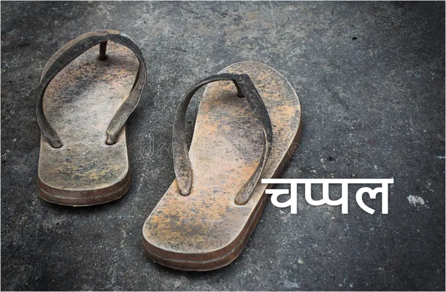
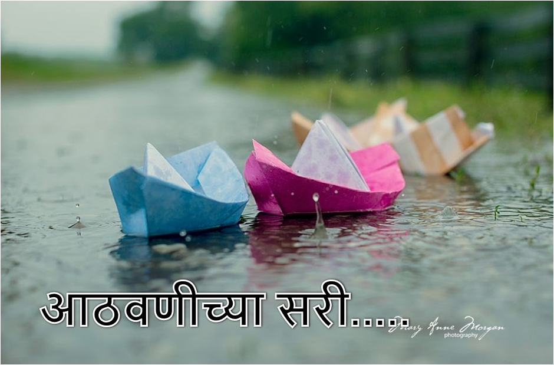
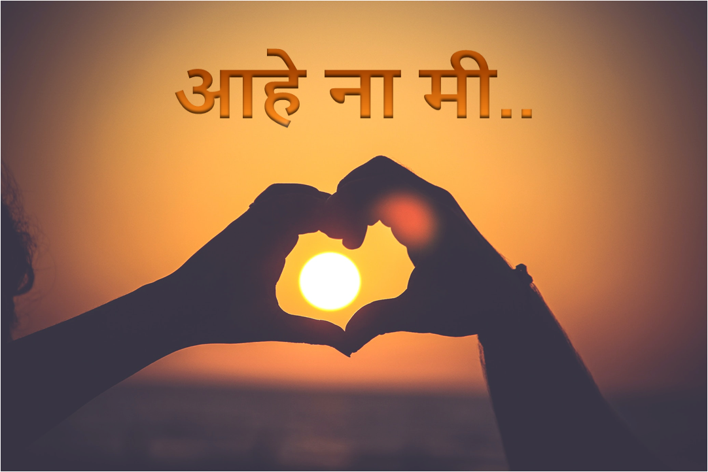
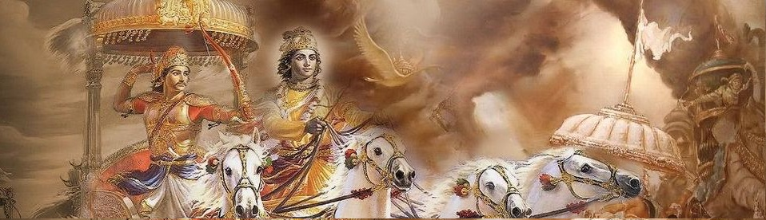

म्हटलं रोज रोज कशावर लिहायची कविता
विचार करता करता म्हटलं
आज माझ्यावरच लिहते मी कविता
म्हणून विचार करत होती ‘मी आहे तरी कशी ?’
कोणी म्हणते तू खूप चांगली आहेस
कोणी म्हणते तुझ्यासारखी वाईट तूच आहेस
कोणी म्हणते तू खूप शांत आहेस
कोणी म्हणते ‘थोडी शांत बस’ किती बोलकी आहेस
कोणी म्हणते तू सावळी आहेस
कोणी म्हणते तू सावळी असून पण सुंदर आहेस
कोणी म्हणते आमच्या सोबत पण बोल एकटीच का आहेस
कोणी म्हणते सर्वानसोबत बोलतेस तू किती फ्रँक आहेस
कोणी म्हणते तू सेलफिश आहेस
कोणी म्हणते आता तरी स्वतःचा विचार कर,
आतापर्यन्त दुसर्यांचाच करतात आली आहेस
कोणी म्हणते तू अशी आहेस
कोणी म्हणते तू तशी आहेस
मग म्हटलं खरच विचार करू दे ,
‘मी आहे तरी कशी ?’
विचार केला तर विचारच पडला
एवढ्याश्या आनंदात, मी इतकी हसते कशी
एका छोट्याश्या शब्दात, मी धायमोकळून रडते कशी
कधी कोणी कितीही बर-वाईट बोलल तरी मनात हसते,
खरच मी इतकी बेशरम कशी
माझ्या मनात एवढा कल्लोड असूनही, मी इतकी शांत कशी
एवढासा दिमाग आहे, तरी तो इतका चालवते कशी
एवढी भित्री आहे, तरी इतक्या कलाकार्या करते कशी
कधी-कधी माझाच पाय फटक्यात असूनही, दुसर्यांचा पदर शिवते कशी
तशी दिसायला इतकी सुंदरही नाही पण फोटोत, आहे त्यापेक्षा सुंदर दिसते कशी
बघितल तर माझ्याकडे खूप वेळ असते, तरीही मी इतकी busy कशी
कधी प्रॉब्लेम असूनही, इतके पांचट जोक्स मारतेच कशी
कोणाही सोबत एवढी चांगली राहते, तरीही मला लोक hurt करतातच कशी
खूप विचार केला तरीही पक्यात समजलं नाही ‘मी आहे तरी कशी?’
याच कारण हेच असावं,
आता पर्यन्त राहत आली मी,
लोकांना ‘हवी तशी’
पण आता स्वतःला ओळखायला लोकांनाही दाखवाव लागेल,
मी ‘जशी आहे तशी’
मग मला ही समजेल ‘मी आहे तरी कशी ?’
रागाच्या भरात कोणी काहीही बोलून जाई
त्या बोलण्याचा नेम लावणे शक्यच नाही
रागाच्या भरात शब्द पटकन निसटून जाई
त्या निसटलेल्या शब्दाला झेलण शक्यच नाही
रागाच्या भरात कोणी काहीही निर्णय घेई
तो घेतलेला निर्णय बरोबरच असेल अस शक्यच नाही
रागाच्या भरात कधी तोंडातून कटू सत्य येई
ते कटू सत्य ऐकून समोरच्याला राग न येणे शक्यच नाही
रागाच्या भरात कोणी कोणाचं हृदय तोडून जाई
ते तुटलेल हृदय लगेच जुडण शक्यच नाही
रागाच्या भरात कधी चांगली भाषाही वाईट होऊन जाई
कारण वाईट लोकांना चांगली भाषा समजण शक्यच नाही
रागाच्या भरात बोलयाने नेहमीच काम वाया जात नाही
कधी वाया गेलेल काम रागाच्याच भरात, पुन्हा वठणीवर येई
शब्द म्हणजे काय ?
धनुशातील बाण……
एकदा सुटला म्हणजे
गतीच त्याला नसते भान……
परतायचा त्याचाकडे
पर्याय नसते……
म्हणून विचार करून सोडणे
आनिवार्य असते……
विचार करून सोडला
तर आहे त्याचे मोल……
विचार न करता सोडला
तर जखमा देतो खोल……
बाण हा देतो
शरीराला जखमा……
तर शब्द हा देतो
हृदयाला जखमा……
शरीराच्या जखमा तर
भरूनही जातात……
पण …..
त्या हृदयाच काय ………?
खरच, त्या हृदयाच काय ………?
तुझ्या वाटेवर चालतांना, कधी-कधी थकल्यासारख वाटते
तेव्हा मी थकली आहे, अस तुला सांगावस वाटते
पण तू कधी थकला ,
तर तुला क्षण भर विश्रांतीसाठी, मंदिरात नेते मी थेट
पण कधीच होत नाही, माझी देवाशी भेट
कधी तुझासाठी खाते मी, तापलेल्या वाटेचे चटके
तर कधी माझा जीव, गटार्यातल्या पाण्यातही लटके
तुझा वाटेवर चालणार्या, अनवाणी पायांची करते मी रक्षा
तरीही तुझी वाट, देत असते मला काट्यांची भिक्षा
तुझ्या वाटेने मला कितीही त्रास दिला,
तरी तुझ यश तुला लवकरच भेटेल
भेटलेल यश पाहून, तुझ्या वाटेलाही लाज वाटेल
तुझ्या वाटेलाही लाज वाटेल ….!
आजकाल,
सकाळच कोंबड ओरडत नाही
पण अलार्म ची ट्रिंग ट्रिंग झोपू देत नाही
उठल्यावर सकाळी अंघोळी ची घाई
चिमण्याची किलबिल कोणी एकतही नाही
पटकन आवरून सगळे कामाला जाई
सोबत बसून कोणी जेवणत दूर ,
नास्ता ही करत नाही
दिवसभर विश्रांती न घेता काम करत राही
अरे, तू माणूसच आहेस , मशीन थोडी काही
काम संपवून पटकन घरी जायची घाई
घरी आल्यावर सर्वांसोबत प्रेमानं बोलणं त दूर ,
कोणी कोणाकडे पाहतही नाही
कारण हातातला मोबाइल लक्ष वेधून घेई
रात्री , जेवण करून पटकन झोपायची घाई
कारण, सकाळी अलार्म ची ट्रिंग ट्रिंग झोपू देत नाही
अलार्म ची ट्रिंग ट्रिंग झोपू देत नाही
अरे माणसा, तुला एवढी कशाची घाई ?
आपल्या माणसां सोबत काही आठवणीही बनवत नाही
कोणाला माहीत , उद्या तू जरी असला
तरी ते असतील की नाही ??
म्हणून थोडा वेळ स्वतःला आणि आपल्यांनाही दे
कारण गेलेला क्षण परत येत नाही
खरच परत येत नाही......
मनात साठले आसवांचे तळे
त्यात आहेत विचारांचे जाळे
सोडू द्या, मज मनातील गुंतागुंत
द्या फक्त थोडा एकांत
त्या फाटक्या गोदळीत पाय पसारून
चार दुखाचे आसू गाळून
होऊ द्या, मज मनालाही शांत
द्या फक्त थोडा एकांत
नका दाखवु कोरडी माया
नका देऊ विरळ छाया
होऊ द्या मज, दुखांचा देहांत
द्या फक्त थोडा एकांत
तुम्ही तर रोजचं दाखवता प्रेमाचे मुखवटे
कधी खरे तर कधी खोटे
करू द्या, मज प्रेम माझ्यावर निश्चिंत
म्हणून द्या फक्त थोडा एकांत.....
लोकांसमोर कितीही चांगला राहिला तरीही
त्यांच कधी तिकडे लक्षच नसते
कारण लोकांची नजार फक्त चुकीला शोधत असते
कधी राग आला तर पटकन दाखवचा असते
कारण लोकांच्याही जिभेला हाड नसते
कधी काम कारायचा कंटाळा आला त ‘नाही’ म्हणायच असते
कारण लोकांना करून घ्यायची कला चांगलीच माहीत असते
इच्छा नसतांना प्रेम दाखवायची गरज नसते
नाहीतर डोक्यावर बसायची तर लोकांची सवयच असते
मनाला वाटेल ते काम करायच असते
कारण ते बिघडल तर टोमणे,
पण चांगल झाल तर टाळ्या वाजवणारी हीच जनता असते
लोकांसाठी आपल्या मनाला मारायच नसते
कारण लोकांना फक्त सुखाच भागीदार होण माहीत असते
पण तुमचं ‘मन’ तर दुखातही तुमच्या सोबतच असते
म्हणून लोकांना आपण जस आहे तस दिसायच असते
कारण original ते original च असते
आज प्रत्येकाला होतेय ,नात्याच ओझ
घरातलेच घरात करतात हे तुझ ते माझ….
समोर असले की घालतात, प्रेमाचे मुखवटे
पण पाठी मागे करतात, डाव मोठे मोठे ….
डाव जिंकल्याचा आनंद, गालावर दिसतो
पण आपणच आपल्या माणसाला, हारवून बसतो ….
प्रत्येक जन मातीतूनच येई, मातीतच जाई
मग हे सगळे डाव, चालले कशा पाई ….
कधीतरी जीवनात, पडलाही मागे
तरी डाव करून तोडून नको, रक्ताचे धागे ….
कारण , आज रक्तच करतेय, रक्ताशी गद्दारी
पण विसरू नको मानसा ,
प्रेम अन आनंद, हिच आहे जीवनाची शिदोरी....
हिच आहे जीवनाची शिदोरी....
क्षणात जाई इकडे, क्षणात जाई तिकडे,
त्याने का नाही जावे ? त्यालाही फिरावेसे वाटते
हो ना, त्या मनालाही स्वातंत्र व्हावेसे वाटते...
कधी पक्षाप्रमाणे आकाशात उंच उडवेसे वाटते
कधी धबधब्या प्रमाणे उंचाहून खाली पडावेसे वाटते,
कधी नदीप्रमाणे शांत वाहावेसे वाटते
हो ना, त्या मनालाही स्वातंत्र व्हावेसे वाटते...
कधी खट्याड मुला प्रमाणे मनसोक्त हसावेसे वाटते,
कधी बंद खोलीत स्वतःचे दुखं सावरत मोठ्याने रडवेसे वाटते,
कधी दूर, शांत, एकटेच स्वप्नात रमत बसावेसे वाटते ,
हो ना, त्या मनालाही स्वातंत्र व्हावेसे वाटते...
नाही आवडत त्याला तुमचे ऐकायला,
ठीक आहे, तरीही त्याला ऐकावे लागते ,
पण सर्वांचे ऐकून स्वतःचाच इच्छेप्रमाने करावेसे वाटते
हो ना , त्या मनालाही स्वातंत्र व्हावेसे वाटते...
कधी स्वतःच्या चुकींसाठी स्वतःशीच भांडावेसे वाटते
कधी रागही येतो, जेव्हा चूक नसतांनाही त्यालाच ऐकावे लागते
“पण माझी चुकच नाही” , असे जगाला ओरडून सांगावेसे वाटते
हो ना, त्या मनालाही स्वातंत्र व्हावेसे वाटते...
कधी सर्वान सोबत बोलावे, रहावेसे वाटते
कधी मना प्रमाणे स्वप्नही बघावेसे वाटते
आणि ते स्वप्न पूर्णही करावेसे वाटते
हो ना, त्या मनालाही स्वातंत्र व्हावेसे वाटते…
हो ना ते फारच विचित्र असते, कारण
त्या मनालाही स्वातंत्र व्हावेसे वाटते…
पण तुम्ही त्या मनाला कधी विचारता
‘ ऐ मना ’ तुला काय वाटते ?
कधी मनामद्धे आठवणीच्या अवकाळी सरी कोसळतात
त्या अवकाळी सरींमद्धे दुखांचे आसू ही मिसळतात
कधी अवकाळी सरी तप्त उन्हाळ्यात येतात
त्या मनाला थंड करून सुखद गारवा देऊन जातात
कधी अवकाळी सरींमद्धे वीज ही दाटते
त्या विजेला पाहिल्यावर भीतीही वाटते
तर कधी त्या सरींमद्धे पुन्हा भिजावेसे वाटते
कागदाच्या जहाजेत पुन्हा बसावेसे वाटते
मान्य आहे तिला ,
एका चुकी नंतर झाला तिचा “पसारा” ,
पण तिची चुक तुम्ही आता तरी विसरा...
दहा चांगल्या गोष्टी नंतर एकदा ती चुकते ,
पण दुर्भाग्यान तुमचंही घोडं तिथच येऊन रुकते...
अरे त्या गोष्टीला झाले ना दिवस लई ,
तरी तुमच्या टोमण्यानचा स्टॉक संपतच नाही...
अरे माणूसच आहे , कोणीही चुकते ,
पण तिला समजून घ्यायला तुमचं घोडं रुकते...
चुकीच्या पश्चात्तापात ती रात-दिवस झटते ,
पण तुमचं काही तिकडे , लक्ष नसते वाटते...
तिलाही तिचा “पसारा” पुन्हा आवरावा वाटते ,
पण तुमच बंधन तिला अजून मागे लोटते...
जेव्हा डोक्यामध्ये नवीन कविता चालून येई
तेव्हा हातात पेन अन डोळ्यासमोर कागद भुरकण उडून येई
जेव्हा शब्दाजवळ-शब्द जुळून जाई
तेव्हा पेणातली शाई कागदावर धाव घेई
जेव्हा धावता-धावता पेन थोडा विश्रांति घेई
तेव्हा अस वाटे आता तर काही शब्दचं नाही
मग डोक कवितेच्या विचारात गुंतून जाई
तेव्हा कुठूनतरी चार शब्द येऊन विचारांची गुंता-गुंत सोडवून देई
डोक्यातल चार शब्द कागदावर आल्याने डोक खाली होई
पण त्या सुंदर शब्दांनी कविता पूर्ण होऊन कागद भरून जाई
कागदावरची कविता वाचून मनासोबत डोक आनंदानं गाई
त्या आनंदी डोक्यात पुन्हा नवीन कविता डोकावून पाई
पुन्हा नवीन कविता डोकावून पाई...
ती माँ दुर्गा आहे
तर तिच महाकाली ही आहे
फक्त जागृतीची देर आहे...
तिच्यात वेदना सहन करायची ताकद आहे
तर तिच्यात वेदना द्यायची अक्कल ही आहे
फक्त जागृतीची देर आहे...
यशाच्या शिखरावर नेणारी ती आहे
तर तिच तिथून धक्का ही देणार आहे
फक्त जागृतीची देर आहे...
तू तिचा इतका राग केला आहे
तरी तिच्या मनात प्रेमाचा पुर आहे
पण आता मर्यादा पार न करता
लवकर सुधार भावा
नाहीतर तिच्या जागृतीला थोडाच वेळ आहे ...
ती एवढी अबोल आहे, कधी विनाकारण बोलतही नाही
पण तिचे कोरीव डोळे, सर्व बोलून जाई...
ती एवढी सभ्य आहे, कधी मोठयाने हसतही नाही
पण तिचे स्मित हास्य, मनात घर करून जाई...
तिचा रंग सावळा आहे, जास्त गोराही नाही
पण तीच तेज पाहून, सूर्य ही मावळूण जाई...
लोकही तिला म्हणतात तू खूप चांगली आहेस, पण गोरी असती त बर झाल असत...
पण का, एक चांगली व्यक्ति व्हायला, मनाच स्वच्छ असण पुरेस नसत ??
अरे माणसा...
तुझ्यात आहे खूप, सुप्त शक्ति
जी देईल तुझ्या, दुखाला मुक्ति
तुला कधी-कधी दुसर्याच्या सफलतेची ईर्ष्या, होते लई
पण तुझ्यातली शक्ति, तुला दिसतच नाही
जेव्हा तुला तुझ्या शक्तिची, जान झाली असेल
तेव्हा अशक्य तुझासाठी, काहीच नसेल
जेव्हा तुझ्या समोर येईल, आणीबाणीचा क्षण
तेव्हा अचानक उत्पन्न होणारी शक्ति, जाणील तुझ मन
खूप मोलाचा तो, क्षण असेल
जेव्हा तुला ती शक्ति, तुझ्यात दिसेल ....
तुम्ही बदलत जा रोज जगाच्या संग
अन आम्ही बदललो की म्हणता
दाखवला रंग....??
तुमचे नियम ठेवता नेहमी तुमच्या संग
अन आमचे नियम
कायदेभंग....??
तुम्ही राहत जा नेहमी स्वतःतच दंग
अन आम्ही असलो की म्हणता
हे बघा ‘मंद’....??
तुमच्या डोळ्यातलं पाणी दुखाचे आसू
अन आम्ही रडलो की
गाळू नको ‘मगराचे आसू’....??
तुमची चूक म्हणजे जाऊ द्या होणार नाही पुन्हा
अन आमची चूक
‘खूप मोठा गुन्हा’....??
तुमची प्रत्येक गोष्ट तुम्हाला किती प्रिय असते
मग आमचीच गोष्ट का जगावेगळी भासते....??
तुम्ही हे कस विसरता की प्रत्येकालाच ‘मन’ असते....??
जेव्हा माझ्या डोळ्यात
खूप पाणी दाटते
ते पाणी काहींना माझी
कमजोरी वाटते
त्यांना मला आवर्जून सांगवस वाटते
जेव्हा माझ्या डोळ्यात
खूप पाणी दाटते
तेव्हा माझ्यात आगीचा
भडका होऊन उठते
माझ रक्तही तेव्हा
खवळून उठते
जणू मला शकतीच
वरदानच भेटते
अन तो शक्तीचा बाण
दुप्पट वेगानं ध्येयाकळे सुटते
अन या बिचार्यांना
माझ्या डोळ्यातलं पाणी
माझी कमजोरी वाटते
तेव्हा मी लहानच होती
तरीही माझा डोळ्यात स्वप्न मोठी होती
पण ते पूर्ण करायची वाट माहीत नव्हती
म्हणून तुम्ही दिलेल्या वाटेवर मी पाऊल टाकत होती
इवल्याश्या पाऊलांनी पुढे चालत आली
प्रत्येक वळणावर जात होता तोल
तेव्हा मीच मला सावरतही आली
सावरतांना स्वतःला, मनामद्धे सारखी एकच शंका आली
मला जायच होत कुठे अन मी कुठे आली
ही वाट आताच तर चालू झाली
तरीही मी कुठे आली, मी कुठे आली ?
मनातल्या मनात खूप अस्वस्थ झाली
पुन्हा स्वतःला सावरत,
मनामध्ये आशा घेऊन तुमच्या कडे आली
पण तुमच्या मते आता “वेळ निघून गेली”
तरीही मला वाटत होत
ही तर वाट आताच चालू झाली
थोड्या वेळेसाठी खूप नाराज झाली
ती नाराजी डोळ्यात पानी घेऊन आली
डोळ्यातलं पानी गालावर पडताच
त्या अपुर्या वाटेची पुन्हा आठवण आली
गालावरच पानी पुसताच
माझ्यात नि स्वप्नात स्पर्धा सुरू झाली
आता अपुरी वाट माझी मजबूरी नाही गरजच झाली
त्या वाटेला पाहून मनातल्या मनात खूप खंबीर झाली
आटा-पिटा करून अपुरी वाट मी पूर्ण केली
शेवटी तीच वाट मला माझ्या स्वप्नांच्या वळनावर सोडून गेली
मी माझ्या स्वप्नाच्या जवळ जात होती
पण ती सारखी मला दूर लोटत होती
बहुतेक मी तिथे जरा उशिरा पोहचली होती
म्हणून ते माझी परीक्षा घेत होती
शेवटी मी त्यात पास होणारच होती
कारण नको ती वाट ही मी पार केली होती
अन ही तर माझी स्वप्नांची वाट होती
ती वाट तर माझ्यासाठीच होती
आता, थोडा उशीरच झाला
पण माझी स्वप्न मी पूर्ण केली होती
हो...! मी ती पूर्ण केली होती....!
ए चल चल पटकन हीच ती गाडी,
जा बस तू पटकन थांबतो मी खाली
खिडकी जवळ जाऊन ती बसते
हात तिचा सोडताना हिंमतही खसते
पेपर घे, पाणी घे, पॉपकॉर्न घे खाया
खरच किती वेड प्रेम, किती वेडी माया
काल सोबत होतो आपण या वेळी
आज विदा करतांना वाटेय धकूच नये गाडी
मी गेल्यावर "हे कर, ते कर" शब्द पडतात तिचे कानी
बोलता - बोलता येत, दोघांच्या ही डोळ्यात पाणी
खिकीतून हात काढते बाहेर, द्यायला अखेरची टाळी
दोन सेकंडही स्पर्श नाही होत, चालू होते गाडी
तिच्या कडे बघून वाढते हृदयची धडधड
निरोप देता शेवटी ठेवतो काळजावर दगड
सुटल्यावर गाडी, गती घेते सर - सर
ती गेल्यावरही, तिलाच शोधते माझी नजर...
तिलाच शोधते माझी नजर...
नेहमीच तुझा सोबत.. तुझी साथ होऊन
तुझा ह्रदयात.. तुझा श्वास होऊन
तुझा कुशीत... विश्रांती होऊन
तुझा गालावर... हसू होऊन
तुझा नाकावर.. राग होऊन
तुझा गाडी वर... गती होऊन
तुझा मनात... प्रेम होऊन
तुझा मनगटात... बळ होऊन
तुझा डोळ्यात.. स्वप्न होऊन
तुझा कथेत.. अर्थ होऊन
आहे ना मी...
नेहमीच तुझा सोबत.. तुझी साथ होऊन...
हो न.. तुला तेच तर सांगतेय नेहमीच आहे न मी.. तुझा आजूला-बाजूला,
तुझा आत-बाहेर मीच तर आहे
हो न...
आहे न मी...
तुला माहिती आहे? कोण तू?
माझा शेवटचा श्वास तू..
माझा दुःखाचा ऱ्हास तू..
माझा साठी खास तू..
मला सुखचा भास तू..
पण
तो न भास, सत्य तू..
माझ्यात नित्य तू..
आज तू, उद्याही तू..
किमान तू, कमाल तू..
मस्ती तू, धमाल तू..
सर्दी झाली तर रुमालही तू..
निर्मळ तू, सोज्वळ तू..
तापळ तू, प्रेमळही तू..
शक्ती तू, भक्ती तू..
सक्ती तू, मुक्तीही तू..
तू...आहेस... तूच तू..
न मी माझ्यात..
माझ्यातही तू...

जिवनात एकदा तरी वाचावी "श्रीमद्भगवद्गीता"
भाग्यवान आहे मी, कि "गीता वाचायची" अशी प्रेरणा माझ्यात जागृत झाली. आज एका व्यक्ती बरोबर बोलताना मला realize
झाल की, नाही! मी बदलतेय माझ्यात खुप चांगले बदल घडुन येत आहेत. माझ्या वागण्यात, बोलण्यात, राहण्यात, स्वभावात,
दिसण्यात, बघण्यात, खाण्यात, पीण्यात तसेच विचार करण्यातही खुप बदल होतोय आणि कोणाला / लोकांना तो बदल दिसो न
दिसो पण मला तो माझ्यात दिसतोय अन तो बघून मला खूप समाधान वाटतेय मी माझ्या बद्दल खुप खुश आहे. आणि महत्त्वाची
गोष्ट म्हणजे मी गीतचे आज फक्त सहाच अध्याय संपवले अजून बारा अध्याय बाकी आहेत म्हणजे मला अजून भरपूर काही
भेटायच / शिकायचं बाकी आहे, गीता या शब्दातच इतकी ताकत / प्रसन्नता आहेना ही गीता म्हटल्यावरच पवित्रतेचा भाव
मनात जागृत होतो. वाचतांना तूर खुप उत्सुकत वाटते कि अजून काय आहे पुढे, अजून नियतीची काय सत्यता आहे, हे वाचण्यासाठी
मन व्याकुळ होतच आपण हे तेव्हाच होत जेव्हा आपल्या (साधकाच्या) मनात आपला उद्धार करून घेण्याची इच्छा असते. अन्
आधी २-४% जरी पुण्य कर्म केले असतील ना तर ती इच्छा ईश्वरच निर्मान करतो यात कुठलाही संशय नाही. खर तर गीता
माणसाला जिवनाकडे बघण्याचा खुप सुंदर दृष्टीकोन देते. तुम्ही आयुष्याला खुप सकारात्मक दृष्टीकोनातून बघाल . ही माझी खात्री आहे.
मान्य आहे मला कि, या धकाधकीच्या जीवन शैलीत माणसाला दोन मिनीट निवांत बसायला वेळ पुरत नाही. अन् वेळ असला तरीही
आज वेड मात्र माणसाला वेगळेच लागले आहेत, वेगळच म्हणजे बदलत्या जीवन शैलीत माणसावे छंद आवडी निवडी खुप बदललेल्या
आहेत. आध्यात्माची आवड खुप लोकांना राहीली आहे. आध्यात्मा कडे बघण्याची लोकांची दृष्टी जरा बदललेली मला दिसतेय
तसा अनुभवही मला आला. आता बदललेली म्हणजे कशी ? लोक आध्यात्माकडे फावल्या वेळेत केली जाणारी गोष्ट किंवा संकट
काळातच देवाकडे जायच अस काहीतरी लोकांच वागण मला दिसतेय. इतकच काय आधी मी पण हेच करायची.. पण काही घटना, व्यक्ति
किंवा परिस्थितींमुळे आपण नैराश्याचे शिकार होतो आणि आजकाल तर लोकांची सहन सक्ती कमी झाल्याने खुप लोकांना
नैराश्यजन्य परिस्थितीशी लढावे लागतेय ज्याला आपण Depression म्हणतो . अगदी १० पैकी ७ लोक तर 'याचे शिकार मला
दिसून आले आहेत. वयाने लहान असो, मोठे असो, नासमज किंवा समजदार लोक ही hang' पडलेले दिसतात. हो! अगदीच, smart
phone सारखे तर या परिस्थितीस जास्त वेळ न राहता यातून बाहेर पडण्याचा मार्ग म्हणजे गीता...
जिवनाच्या अंतीम ध्येयाचा मार्ग दाखवनारी गीता.
समजून सांगणारी गीता, सांभाळणारी गीता
समृधी म्हणजे गीता, संस्कृती म्हणजे गीता
अंताम सत्य गीता, ईश्वर वचन म्हणजे श्रीमद्भगवद्गीता:
म्हणून जीवनात एकदातरी वाचावी "श्रीमद्भगवद्गीता:"
-समिक्षा
27Aug2021
कोरोना जास्त danger कि लोक..? जास्त त्रासदायक कोण?
महत्वाच काय असत जीवनात.. लोकांचे मत की तुम्हाला जाणवाणाऱ्या भावना?; की त्याना वाईट वाटू नये म्हणून आपल्या
भावनांना दुर्लक्षित करून लोकांच्या मतानुसार वागणं.. आणि समझा आपण लोकांचं ऐकलं सुद्धा तरी काय होत..? मान्य
आहे लोकांचं ऐकणं ही बरोबर च आहे ते ही आपल्या चांगल्या साठीच सांगत असतात... पण आपल्या मनाला जे बरोबर वाटत
त्याच काय? आपल्या भावना वेगळ्या असतील तर? आपला दृष्टीकोन वेगळा असेल तर?
एक मिनिट.. Title वरून तुम्हाला जर वाटत आहे की मला कोरोना झालेला आहे तर तुम्ही बरोबर आहात.. हो आहे मला
कोरोना.. आणि मी घेतीये माझी काळजी.. हा कोरोना खरंच इतका भयंकर आहे का.. कोरोना असल्याचा मला कसा शोध लागला..
अश्या असंख्य प्रश्नाची उत्तर तुम्हाला मिळतीलच.. तर झालं असं की....
आधी तर असं वाटलं कि..
मी कस काय यारर...
अस नाही होऊ शकत...
अस कस शक्य आहे..
पण झालं..
अन मनाला जरी शक्य वाटत नसल, तरीही "जे आहे ते आहे" अन "तसच" आहे, शेवटी आपण कितीही मनाल,स्वतःला समजावण्यचा
प्रयत्न केला तरीही सत्य हे स्विकारावच लागत कारण सत्य हे "एकच असत, न बदलणार, कायम, ठाम" आणि त्याच्यासोबत
राहवाच लागत.
बर चला,
सांगते हे कशाबद्दल बोलतेय आधी नेमक झालं काय, ते ही ऐकून घ्या, 6-7 दिवसांपूर्वी थोड घस्यात दुखणं,मग थोडी
सर्दी नंतर ताप आणि खूप अशक्तपणा आलेला, तर मी हॉस्पिटल गेली normal डॉक्टरांनी 4दिवसांच्या tab दिल्या.Tab
घेतल्या पण तरीही त्या घेऊन ही ताप कमीच होत नव्हता आणि अशक्तपणा ही खूप आलेला म्हणून मग परत डॉक्टर कडे जाऊ असं
ठरवलं, तर डॉक्टर बोलले आजूबाजूला वातावरण असं चालू आहे तर तुम्ही एकदा covid test करा आणि जर test निगेटिव्ह
आली तर ब्लड test करू,
म्हंटल ठीक आहे कस तरी मन घट्ट करून, माझी test निगेटिव्हच येईल या विचाराने test करायला गेली, पूर्ण रस्त्यात
विचारांचं वादळ, काय होईल,कस होईल test पॉसिटीव्ह आली तर कस करायच, कोरोना आधी खूप normal वाटत होता पण आता तो
इतक्या जवळ कसा काय आला हाच प्रश्न,पण नंतर एक मन म्हणत होत कि "Be positive, you will not be positive". असं
सर्व चालू असताना जवळच covid center आलं एकटीच मध्ये गेली test करताना खरंतर भीती वाटतच होती डॉक्टरांनी नाकात
स्टिक टाकून sample घेतलं,,4-5सेकंड नाकातून भाळ-भाळ रक्त आलं, माझा हृदयाचे ठोके खूप जास्त वाढले होते "God....
Negative येऊ दे रे.. Plzz plzz... " असं म्हणता म्हणता थोड्या वेळातच सिरांनी माझं नाव घेतलं रिपोर्ट आला...
रिपोर्ट वर विश्वासच बसत नव्हता..
Test पॉसिटीव्ह आली मग काय... थोड टेन्शनच आलं.. आता कस करयच? कुठं राहायचं? घरी गेली तर मम्मी पप्पा आहेत पप्पा
ची तब्बेत थोडी खराब आहे अन वयनुसार त्यानंची immunity पण कमीच अन तसही माझा मुळे घरच्यानां, त्रास मला कधीच
आवडणार नाहीच म्हणून घरी जाण मला बरोबर वाटत नव्हतं अन covid center ला राहील तर ते 15 दिवस compulsory ठेवतात
नंतर घरी जायचा तर अवघड होईल,अन इथं ही राहील तरी जेवणाचं काय? काय करू मी आता????एकटी कस हॅन्डल करू सर्व??असे
भरपूर काही प्रश्न....
म्हणेज घरी सांगायची पण इच्छा होत नव्हती पण इतकी मोठी गोष्ट आहे तर सांगाव लागेल म्हणून फक्त भावला सांगितलं
आमचं बोलण झाल तो डॉक्टर असल्यामुळे त्याने खूप धीर दिला मला आणि घरी सांगितलं तुम्ही टेन्शन घेऊ नका माझी काळजी
घायला आहेत इथे roomate वगैरे पण actually इथे कोणीच नव्हतं आणि जिथे राहतेय त्याच फ्लॅट वर home quarantine मी
झाली, डॉक्टरांसोबत बोलणं झालं tab घेतल्या अन quarantine period चालू झाला, काही दिवस झाला त्रास म्हणेज जिभेला
टेस्ट येत नव्हती काहीही खाल्लं तर, खूप जास्त अशक्तपणा हे सर्व होत पण tab वगैरे घेने,गरम पाणी पिणे काढा पिणे
या साऱ्या गोष्टीनंतर तो 6-7दिवसात त्रास कमी होऊन गेला, अन हळू हळू मी normal होतेय काहीही मोठ आपल्याला झालेलं
नाही असं वाटू लागलं म्हणेज ओव्हरऑल फक्त कोरोनाबद्दल बोलायचं झालं तर तो आजार म्हणून इतका पण danger अन
घाबरण्या सारखा आजार नाही जितकं लोक त्याला समजतात तितका danger तर मुळीच नाही.
सध्याही quarantine period ch चालू आहे तर मला सध्या कोरोना पेक्षा लोकांचाच जास्त त्रास होतोय. त्यांच्या वागण
बोलण अचानक च chnge होऊन गेलं जस मला कोणता महारोग झाला..😣 हे फक्त आपल्या जवळच्या लोकांना बद्दल..म्हणेज जे
लोक राहायला जवळ असतात पण मनाने नाही असे काही, म्हणजे म्हणायलाच काही लोक आपल्या जवळचे म्हटल्या जातात पण खरंच
आपले म्हंटल्याणी आपले लोक आपले होतात का? जेव्हा आपले आपल्यानं सोबत आपल्या सारखे वागतील तेव्हाच ते आपले
म्हणण्याचा लायकीचे असतात मला तरी असं वाटतेय.मग जवळचे लोक खरंच जवळचे असतात का? हाही एक प्रश्नच....
असो....
आणि वपु म्हणतात तेही खरंच आहे कि "अंत आणि एकांत यामध्ये माणूस "एकांताला" जास्त घाबरतो" कारण एकांत हा खरंच भयंकर असतो
हे ही जाणवलं काही प्रमाणात.पण तस बोलायचं झालं तर थोडीफार सवय होती एकांताची मला, या ही काळात एकटीच आहे तर पुन्हा नव्याने
स्वतः सोबत खूप गप्पा मारल्या,एकटीनेच डान्स केला गाणी म्हटली, ऐकली काही कथा वाचल्या, ब्लॉग्स वाचले. थोडं लिहायचा प्रयत्न केला.
तस पण "जिसका कोई नाही होता उसका मोबाईल होता है" ऑनलाईन किंवा कॉल वर खूप लोकांशी गप्पा ही मारते.
मोबाईल हुन लोक खूप धीर देत आहेत.तब्बेतीचा ठाव घेत आहेत. लवकर बरी हो, जेवण कर, tab घे, काळजी घे हे तर कायमचेच mesg
आहेतच रोजचे खरंच खूप बर वाटत हे वाचून....
आता तब्बेतीत ही खूप सुधारणा आहे....
अन Plz तुमच्या जवळ जर कोणाला कोरोना झाला असेल तर त्या वक्ती सोबत प्रेमाने वागा कोरोना हा बरा होतो हा काही महारोग नाही
कि जवळ गेल्याने लगेच दुसऱयाला होईल म्हणून असं न वागता जे नियम पाळायला हवेत ते पाळा मास्क लावा,sanitizer वापरा,
नको त्या ठिकाणी गर्दी करू नका, सामाजिक अंतर राखा, मानसिक नाही...
हे जास्त महत्वाच आहे..
.
😊
.
धन्यवाद ❤
तू आहेस (पत्र माझा लहान बहिनीला)
डियर डियर सिस्टर,
खुशी,
तुझी 12th झाली, तू आता एडुकेशन साठी घरा बाहेर पडणार, कस राहायचं वगैरे वगैरे तुला सांगायची गरज नाही,
तरीही तुला एक सांगायचं होत, तू फार लवकर कॉन्फयुज्ड होते, सरळ सरळ बोलायचं झाल तर, काही टेन्शन आलं की लगेच बावरते,
काय करू, काय करू, कस करू, कस होईल... वगैरे वगैरे करते... म्हूणन एक सांगायचं होत की, जगात तुझा आजूबाजूला जे
पण काही आहे, जे तुझा सोई साठी आहे, वारंवार तुझा कामात येते, मग ते काहीही असो कोणी व्यक्ती असो, एखादी वस्तू असो...
काहीही....... सर्व हॆ फक्त 'तू आहेस' म्हूणन तुझा आहेत..
त्या वस्तूंमुळे, व्यक्तीमुळे तू इथे नाहीस..... जर तू नसती तर काहीही नसत... म्हूणन 'स्वतःला' महत्व दे..
जगात तुझासाठी कोणतीच गोष्ट अशक्य नाही, तुला वाट्टेल ते तू करू शकते कारण काय 'तू आहेस' म्हूणन...
तुझी इच्छा हा तुझा तुझ्यासाठी हुकूम आहे.. म्हूणन तुला वाट्टेल ते कर, वाट्टेल तसे कर.. स्वतःवर विश्वास ठेव..
स्वतःवर प्रेम कर.. स्वतःची काळजी घे.
तुला सर्व बाजूनी एक सीमा आहेत आणि त्याचा सेंटर तू आहेस ते तुझा आयुष्याच सर्कल आहे आणि फक्त तुझं आहे,
त्यात कोणाला ठेवायचं आणि कोणाला नाही, हा तुझा स्वतंत्र निर्णय आहे, मान्य आहे कधी लोकांना ओळखायला चुकतो
आणि चुकून ते आपल्या सीमेट शिरतात, कालांतराने ते आपल्या आवडली नाही किंवा नंतर तुला त्यांचा त्रास झाला तर
त्यानां कायम चं बाहेर काढून दे, मग त्यानां काय वाटेल याचा विचार तू नको करू नकोस..
आणि जे तुझ्यावर प्रेम करतात, त्यांच्यावर तुही जीवापाड प्रेम कर.. त्यांना तुझा आयुष्याचा शेवट च्या क्षणा पर्यन्त जप..
आणि कधी एकटं वाटलं, आपल कोणीच नाही, सर्व स्वार्थी आहेत, हॆ मी कोणाला सांगू, कोणाला बोलू, वगैरे वगैरे विचार
आले तर तुला समजून घ्यायला नेहमी मी आहे आणि मी नसली जरी तरी तुझा साठी फक्त 'तू आहेस'
तुझी समी..
(मी मोठी असून पण तू ताई म्हणतं नाही 😒)

माझा बद्दल....
मी समिक्षा, तशी मी पेशाने Electronics Enginner आहे, पण छंद म्हणून लिखाणाची सुद्धा आवड आहे, कविता लिहिणे, लेख लिहणे किवा अगदी उगाच काही तरी गहन लिहायची इच्छा असली तर डायरी सुद्धा मी लिहिते. शिवाय मला वाचनाची सुद्धा आवड आहे, वपू काळे हे माझे आवडते लेखक, भालचंद्र नेमाडे, सोबतच साने गुरुजी, पु. ल. देशपांडे, सुहास शिरवळकर ह्या सुदा लेखकांचा प्रभाव माझावर आहे. नेमाडेंची कोसला हि कादंबरी हि सर्वात आवडती कादंबरी, वेळे अभावी लिखाण-वाचन थोड कमी झाल असल तरी काम करत करत audio book ऐकण्याचा मोह मला आवरत नाही.
माझा कविता किंवा लेख आवडल्यास नक्कीच कळवा, त्यासाठी माझा
- Email - skalne14@gmail.com
- Mobile No - 8551938140